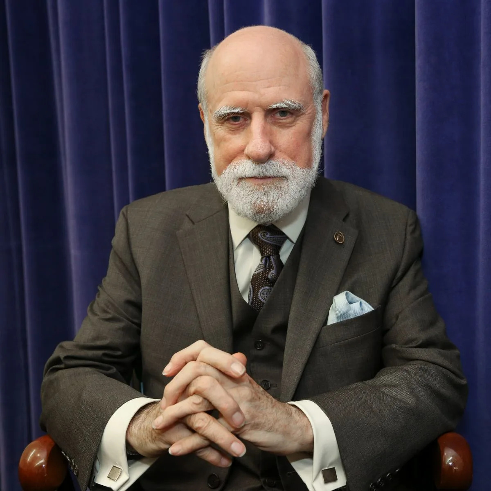

Internet protocols
Vint Cerf
Vint Cerf är en av personerna bakom TCP/IP, protokollen som gjorde det möjligt för olika nätverk att fungera tillsammans som ett större internet.
På 1970-talet arbetade Cerf tillsammans med Bob Kahn med idéerna som skulle bli grunden för internetkommunikation. Det viktiga var inte en enskild maskin eller ett enskilt nät, utan ett system där många nätverk kunde kopplas ihop utan att allt behövde vara byggt på samma sätt.
Det är därför Cerfs arbete spelar roll: internet blev inte bara en teknisk uppfinning, utan en princip för öppen sammankoppling.
Läs mer om Vint Cerf